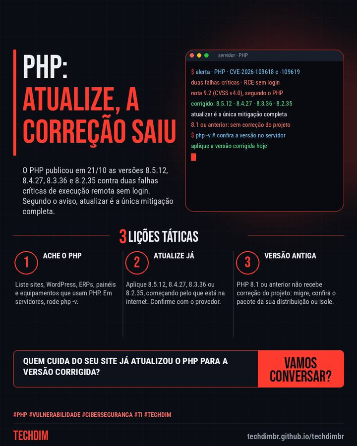

Alerta de segurança
PHP 8.5.12, 8.4.27, 8.3.36 e 8.2.35 corrigem duas falhas críticas de execução remota
O PHP publicou em 21/10 as versões 8.5.12, 8.4.27, 8.3.36 e 8.2.35 contra duas falhas críticas de execução remota sem login. Segundo o aviso, atualizar é a única mitigação completa.

O que aconteceu
- O PHP publicou em 21/10 as versões 8.5.12, 8.4.27, 8.3.36 e 8.2.35, que corrigem duas falhas críticas (CVE-2026-109618 e -109619, nota 9.2) de execução remota sem login
- O aviso do PHP diz que atualizar é a única mitigação completa. Versões anteriores às corrigidas são afetadas e o 8.1 e anteriores não recebem correção do projeto
- Atualize já: liste onde há PHP (site, WordPress, ERP, hospedagem), aplique a versão corrigida e confirme com o provedor. PHP 8.1 ou anterior: migre ou isole da internet
Seu site ou sistema roda em PHP? Peça a quem cuida dele a versão em uso e a atualização para a versão corrigida hoje.
Por que importa
Falha crítica em tecnologia muito usada em sites e sistemas de pequenas empresas, com correção oficial publicada pelo PHP em 21/10; a pauta foi atualizada com os avisos oficiais antes da publicação.
Como se proteger
- Ache o PHP. Liste sites, WordPress, ERPs, painéis e equipamentos que usam PHP. Em servidores, rode php -v.
- Atualize já. Aplique 8.5.12, 8.4.27, 8.3.36 ou 8.2.35, começando pelo que está na internet. Confirme com o provedor.
- Versão antiga. PHP 8.1 ou anterior não recebe correção do projeto: migre, confira o pacote da sua distribuição ou isole.
Fontes consultadas
Mais do Radar de hoje
- Notícia de tecnologia OpenAI diz que GPT-6.1 Sol migra código COBOL com 86,6% de acerto em teste próprio
- Dica prática unattended-upgrades no Debian: atualizações de segurança automáticas em 5 passos
- Serviço TECHDIM Backup e recuperação: quanto tempo sua empresa aguenta parada e quanto dado pode perder?
Leia também
Este texto resume as fontes citadas na data de publicação. Confira sempre o aviso oficial do fabricante antes de agir em produção.